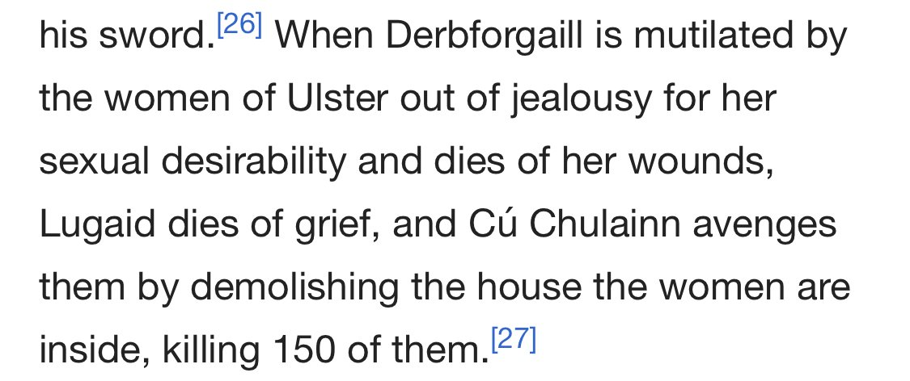

Hakan Rotmwrt
The banning of Hakan took so long because a twitter employee had to immerse himself in esoteric racial studies for years before he was able to finally understand a single tweet of his - afterwards pronouncing the verdict.
RIP 2015 - 2019
continue to pray to Yellowstone. concentrate on the magma chamber. we can end it here. we can end it for all time.
We must celebrate health and will to dominate. No more wheelchair ramps! Entrances must instead demand great feats of climbing and leaping.
keep on finding coins from parallel worlds in my couch. Nazi victory USA, Comanche victory in Indian War (they would later ally with nazis).
4 Jan 2016
More simply, fruit & vegetables taste like wood & flowers. Meat is altogether the best thing, & I hope for a purely carnivorous race of men.
who will view the whole world, even the other men they will speciate away from, with the binocular clarity of a total predator.
9 Aug 201?
Mohammedans worship a demonic entity named Termagant (demiurge 'YHWH' of the Jews).

>bitcoin is a bubble
>bitcoin is a store of value
actually, bitcoin is more like spiritual indulgences. if you don't have btc, they won't even bother to run you in ancestor simulations. Martin Luther = fuming nocoiner
7 Dec 2017
don't EVER let a brahmin-privileged turmeric monster lecture you about POC, colonialism, cultural appropriation, or representation. remind them that when the lord indra arrived on the ganges in his chariot to slaughter 6 million dasyu aboriginals, the first word he said was 'namaste'
?
"Current illegal border crossings are running about 100,000 per month." For perspective, there are only ~70,000 Lakota people in the US. mass Latinx migration is Mestizo/Oto-Manguean/Mayan colonialism and anti-Siouan genocide.
5 Apr 2019
High-quality racism is extraordinarily hard work. You have to have working recall of at minimimum eight or nine thousand distinct races, living and extinct, and run extensive simulations just to model the disgusting attributes of the most easily conceivable 2- & 3-way crosses.
7 Jan 2018
If you see UFO over western USA or Japan, it is quite likely manifestation of an Aboriginal Australian who is meanwhile in unconscious state 2 Nov 2017
idea: break dozens of prophets out of prison and psychiatric institutions, give them command of #rightwingdeathsquads 19 Jul 2016
"The Name is peculiarly spelt by an ape and the symbol of birth." #BixNood 29 Dec 2015
Greys in a huge cylindrical chamber littered with mummified cave bears and bound skeletons of Homo erectus playing brainstem-implanted Marco Rubio like a Sims 3 character, having him gobble Adderall like a trail mix to raise his hitpoints
9 June 2018
Vronsky: Main giveaway of a female serial killer is absence of sexual assault or physical mutilation of victims. 20 Dec 2015
I annotate people's names w. (((x))) ***x*** !!!x!!! [[[x]]] ///x\\\ etc. by ethnicity in all my correspondence. Up to 300 symbols now. 24 Jul 2016
idea: imitation jackfruit made out of meat 19 Oct 2017
Game show where e-racists guess someone's race and ethnicity
it's not a "game", it's very serious, and the price is your life
8 Jun 2018
“nootropics” users be like: develop never-before-seen prion diseases from Belarusian nootropics made from centrifuged pig brains that you take intravenously but it was all worth it to accomplish great things like posting on an internet messageboard about nootropics
Mar 2019
the difference between Aplinids and Nordids
28 Nov 2018
spreading leaf litter on my floor so his enemies won't be able to see him
Now Singapore. Pretty soon America will be the ONLY place on earth where you can fly from China.
22K people land here EVERY DAY from China. This is madness. It must stop.
Normies are realizing the insanity of generalized freedom of global movement. Trans-oceanic crossing of humans and goods should be rare, risky, slow, and challenged by force of arms on arrival.
31 Jan 2020
I will always trash mass literacy &the braindead 'Kwan worship of entremanureship &plebeian "human potential".you have a rancid reek, it's cornmeal, it's starch, it's crudely drawn "local zines".so go fall on your sword for the county chamber of commerce somewhere else.
8 May 2019
I have a great hatred for "small, independent bookstores", the kind that sell enamel pins. I will shut these places down and pulp their contents.
You are a disgusting person. I unfollowed you bc you are disgusting.
Good. You are bloated with sickness. The worms have encysted like hard almonds in your muscle and the smooth rings of your guts. "Supporting local businesses" by lapping up Dan Brown's vomit will not cure this.
You nihilism and irony disgust me. You are a bad person. Your attack on "Supporting local businesses" is beyond reproach.
no irony here, retard. independent bookstores selling enamel pins &"fear women who read" reusable totes are by &large roach traps for the worst kind of people, much like public libraries that pivoted to flophouses for the homeless &"digital humanities social justice" centers.
By attacking reusable totes and rejecting "Supporting local businesses" you show your hatred of all the best features of community life. You must hate humanity (huwomanity) if you disdain reusable totes. You are a very bad person.
your community life is the filth of the multifamily longhouse, of the endless tropic loop of pigsties recycling human shit, of watching a Dave Eggers film adaptation five years from now with a still fatter gut on the greasy upholstery of a "quirky community movie theater".
8 May 2019
Christian heresy that “the lower parts of the earth” or “the lowest” into which Jesus descended was not Hell but sub-Saharan Africa
Mar 2019
another day, another Japanese Messianic Jew trying to convert Bukharians
Mar 2019
“It’s Brooklyn, man. I buy a lightbulb.”
Mar 2019
wearing your hair in “waves” is a sign of support for Lassalle’s (grade school book report-level) interpretation of Hegel
Mar 2019
no media creature of any sort has the right narrative about this murder, and it’s because they’re deficient in racial education. an Afro-Mexican from Guerrero killed a North American Great Plains mestiza. Latin immigration is American Indian genocide.
Mar 2019
reminder: Ben Shapiro and Omar al-Bashir share the same Y-chrosomomal haplogroup (A3).
Mar 2019
if someone brings up Joyce, you say, “i’m not into ethnic lit.”
“as a person of privilege, i can’t relate to that kind of lived experience.”
“i support it but don’t think it’s appropriate for me to center my whiteness in a poc literary space.”
“have you read Ta-Nehisi Coates?”
“Salvadorans be like, ‘Shalom!’”
remember what we once were. remember what we will be again. #SomalidPower

May 2019
reminder: Ronaldinho is the Iberian Arabic diminutive of Rukn al-Din.
May 2019
this is the transmission method.... and note: not a “delusion” of Morgellons, Morgellons itself.
May 2019
They were not programmed to do this....

May 2019
rate this browridge. Chibchans, explain.
May 2019
because they are manifestations of dead Algonquian Indians
he’s just describing the ethnogenesis of Poles
they did not respect. when the next earthquake hits Kathmandu, one toll will have been paid.
they have a foothold in the US now. thinking of illegal Latinx immigration as an economic issue is the wrong framing. it’s a continent wide GEOMETRIC TRANSLATION that will not stop until Amazonian Indians arrive in Mississippi and could conceivably continue even after that
finance has layered defense mechanisms against (namely, generous allowances for) furtive self-enrichment and narrow-sense antisocial manipulations. not so much against SELF-IMMOLATION, the objective of maximum damage to institutions &instruments without concern for personal gain.
some of my followers are already positioning themselves to inflict great punishments. you must consolidate control. you must be ready to act.
MAR 2019
All political dissent ultimately expresses RACIAL difference. Omid Kokabi, Iranian polit prisoner: ethnic Turkmen. Hamza Kashgari, jailed in SA for poems “insulting Muhammad”: part Uyghur. Örkesh Dölet, the Tiananmen student protest leader: Uyghur (15 million out of...how many?)
JUL 18
It's all about being Malay. Dr. Mahathir Mohamad #AltRight monarch.
6 Feb 2019
"Malays are usually referred to as the "Gentlemen of the East" because they are very polite, very independent , and usually well dressed, and they scarcely ever do any work." — Carveth Wells, "Six Years in the Malay Jungle"
Nature’s Supreme Gentleman, even
nothing makes them more mad than the Malay life of leisure
4 Feb 2019
there’s something depraved about people talking about “my BEAUTIFUL wife...my inspiration for everything,” and people eating it up. it’s not touching but grotesque, especially in supposedly conservative politicians selling “fambly values.” even this brain-parasitized guy gets it.
4 Feb 2019
one of the open problems in biology is the incredible dopiness of Indian mammals. I don’t have to tell you which of any of these pairs is Indian, it’s obvious.
4 Feb 2019
Bantu "Expansion" into East Africa is euphemism for extermination more total than anything in modern genocide. they were like Giger's Alien
preBantu SubSaharan Africa mostly nonblack, inhabited by orange & red peoples. unheard-of races were annihilated in this insane blitzkrieg
the Bantu is a biological weapon infinitely hostile to all non-Bantu life. what do you think really happened to Prester John's kingdom?
Sahara was intentionally transformed into a desert as a suicidal act of Bantu containment. the Portuguese broke this planetary quarantine...
use of Bantu troops against other Europeans by France in the Great War was an incalculable crime, and a fatal civilizational miscalculation
survivors would report how spotlights shone into no-man's-land would reveal seething masses of Bantus swarming over the remains of the dead
15 Jul 2017
in ol-Islom there is no place for racism, just Ethiopians with heads like raisins
for illustration
14 Jul 2017
the sons of Merkel speak truth: today, from Cape of Good Hope to Chittagong Hills, a new consciousness is dawning: the idea of Greater Syria
why can't a Bangla or a Moroccan be a Syrian? Syria is a dream that we all carry inside us
14 Jul 2017
the blue bars on the Israeli flag represent the natural borders of Eretz Yisrael: the White Nile and the Indus
14 Jul 2017
also believe in Harappan communism, #blacklivesmatter in Ptolemaic Egypt,& Universal Human Rights homogeneously enveloping all time & space
14 Jul 2017
Maybe HakonRotmwrt can weigh in on this thing I've been seeing on twitter for years: The afrocentric claim that knowledge is like a physical object that can be stolen, where knowing something erases or removes it from the mind of another.
true knowledge IS zero-sum and it can be forcibly extracted from its bearers, compacted, and shaped into ingestible lonzeges or 'pills'
16 Apr 2019
Napoleon removed the HOOKED and drooping nose of the Sphinx, which in profile resembled the number ‘6’
15 Apr 2019
let the evidence decide
3 Feb 2019
cope.txt
I hope no one here believes this. make special note of the arboriculture metaphor, see how they always trot out this Neolithic meme.
29 Mar 2019
>"hail the worker" -upper middle class college professor
it’s not so much that they’re “out of touch” or “don’t work with their hands” but that labor is irredeemably degrading and the “worker” is a TRASH hominid that submits to service (but never ceases to stew in vengefulness) because of its intrinsic racial inferiority
10 Jul 2018
I am presenting this but will not expand.
7 Jun 2018
out of control spoofing and quote stuffing in the high frequency trading emporia of the Eastern Mediterranean helped precipitate the Late Bronze Age Collapse. fact. #economics #science
10 Jul 2018
all this has happened before. the rise of tech firms and gravitation of venture capital to Bronze Age Mohenjo-Daro were among the most pivotal factors in the rise and entrenchment of the Indian caste system
Indra arriving on the Gangetic Plains in his chariot eerily anticipates Google employees commuting two hours each way to their workplace in a wifi-equipped Google Bus.
10 Jul 2018
People incorrectly call “desensitization” many of what are actually HORMESIS effects. This works not just for alcohol and radiation but also getting berated, listening to “post-punk” “music”, and altitude sickness.
9 Jul 2018
these people are clearly related to an element in Europe that was long ago driven to extinction on the mainland but survived on some peripheral islands, namely Ireland
9 Jul 2018
Navy SEALS are apparently using sensory deprivation tanks with neural and cardiac feedback to accelerate learning.
this is also why all nation-states are so afraid of NEETs in dark, bare basements
8 Jul 2018
Moslem apologists in India: only X% being converted to Mahmoudism =proof of benevolent noncompulsion. That’s wrong but truth may be unflattering to Hindoos. lassitude & TOTAL INCAPACITY for effectual action that overtakes conquerers of that land may mostly be due to local mixture
8 Jul 2018
i used to go to sandwich shop that employed all illegals, then one day they were gone and replaced with under 18 family members
in reality, the illegals BECAME the “family members”. it was probably simultaneous because of hormonal synchronization. #transmogrification
16 Sep 2018
crazy how nature do dat
16 Sep 2018
you, an idiot: “I consider myself pretty woke. I’ve thought a lot about intersectionality.”
me, an intellectual:
26 Jul 2018
Hordes of FBI and indeterminate operators have converged on #Sunspot, New Mexico to shut down the US National Solar Observatory....and the post office.
On this taped call, Otero Country sheriff confirms, discloses local law enforcement totally shut out: https://vocaroo.com/i/s16Jp6WLI9Tn
11 Sep 2018
"Danes are more likely to evade tax than Italians [given the opportunity]; at the same time, Danes are less tolerant of tax evasion by others."
https://archive.is/o/RJiWO/https://pdfs.semanticscholar.org/62eb/759a0b5079486771fa960ca140de6de783c4.pdf
muh “pathologically altruistic high-trust Northwest European societies” dorky HBD fairy tales get wrecked
its funny that you dont have the prior experience to see how badly this research article is written, you a read a lot like this right? how embarassing...
this is likely someone who thinks the problem with G*rmanics is that they’re “too good-hearted”. my prior knowledge is zoology and history, yours is thinking we only just discovered Scandinavians and have to evaluate their dispositions through social science “research design”
oh no i dont know about all that, i was gonna say youre genetically an r/atheism poster and this is just your gay little hobby horse, 52 page research articles are your minecraft fanfiction
this is like when a cardinal attacks its reflection in a side view mirror. you have a pudgy way of lashing out... you’re grotesque, a watcher of cartoons...
for the record, I am very religious!
10 Sep 2018
Gregory Nagy: “Certainly possible” that Helen of Troy was genderqueer, motivation for Trojan War was violation of affirmative consent. #classicism #startwiththegreeks
JUL 18
this is not “erasure” or whatever. to the contrary, they were briefly able to teach the TRUE history
JUL 18
one critical weakness of the female race is that it lives indoors 
JUL 18
Only a stronk alliance of Khoisan and Boer has a chance of fighting back against the cursed Anglo/Bantu symbiosis
JUL 18
the only reason girls like camping is because it reminds them of being abducted and transported through foreign territory by an enemy tribe
AUG 16
there are portals...
AUG 16
>Somalis are semites, have more in common with Yemenis than sub-saharan Africans. Few know this.
Somalis are Cushites and come from the Hindu Kush. see Herodotus on the straight-haired "eastern Ethiopians" from Asia
AUG 16
Neanderthal mixture forestalled total world Africanization. without it Bantu Expansion would by now have reached N Europe
AUG 16
Aristophanes didn't know ... or lied. there are still unhalved 'sorb apples' around.
>I get it. but take a page from orwell and convey your message in a less pretentious manner.
"message"? is called joke, you hereditary Mick retard. and how dare you tell me to emulate an English journalist fag! blocked.
AUG 16
Pseudo-Dionysius the Areopagite was a Christian theologian and restaurateur of the late 5th-6th century who founded Pseudo-Denny's.
AUG 16
racial transformation of transplanted peoples happens even WITHOUT mixing. it is due to bodily colonization by native spirits and demons.
> Papuans are a single race

{kind=link}
{kind=link}
{kind=link}
{kind=link}
{kind=link}
{kind=link}
{kind=link}
{kind=link}
{kind=link}
{kind=link}
{kind=link}
{kind=link}
{kind=link}
{kind=link}
{kind=link}
{kind=link}
{kind=link}
{kind=link}
{kind=link}
{kind=link}
{kind=link}
{kind=link}
{kind=link}
{kind=link}
{kind=link}
{kind=link}
{kind=link}
{kind=link}
{kind=link}
{kind=link}
{kind=link}
{kind=link}
{kind=link}
{kind=link}
{kind=link}
{kind=link}
{kind=link}
{kind=link}
{kind=link}
{kind=link}
{kind=link}
{kind=link}
{kind=link}
{kind=link}
{kind=link}
{kind=link}
{kind=link}
{kind=link}
{kind=link}
{kind=link}
{kind=link}